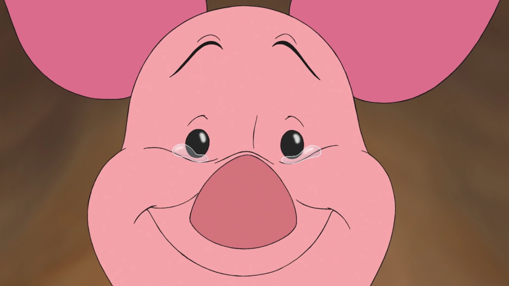

푸의 가장 친한 친구로, 소심함의 극치를 달리는 작은 돼지. 분홍색 외모 때문에 암컷같지만 수컷이다.
언제나 "어쩜 좋지?" "난 몰라!"를 입에 달고 산다.키가 너무 작아서 친구들에게 무시당할 때가 많다.
실제로 겁도 많고 매우 소심하지만 친구들이 위기에 처하면 언제나 도와준다.
귀여운 외모도 한 몫 했지만 피글렛은 평소에는 소심한 겁쟁이일지라도 위기의 순간에 강인함을 보여주는 피글렛의 모습을 닮고 싶다고 생각했기에 가장 좋아하는 캐릭터 중 하나이다.